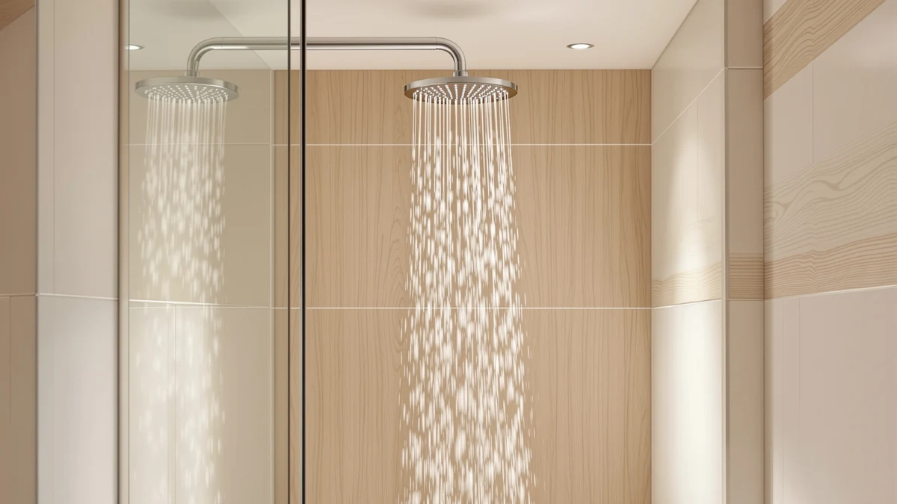

Moen 26009BL Engage 2-in-1 Showerhead Review (2026): Worth It?


Quick Answer
The Moen 26009BL Engage 2-in-1 showerhead combines a fixed overhead spray with a Magnetix handshower that snaps back into its dock on its own, and it holds up well against pricier dual showerheads we compared. At $103.53, it costs more than the Delta and Kohler alternatives below, but the magnetic docking and six spray settings make it the strongest all-around pick for most bathrooms.
Our pick: Moen 26009BL Engage 2-in-1 Showerhead, $103.53 Check Price on Amazon
Bottom line: our top pick is the Moen 26009BL Engage 2-in-1 Showerhead & Handshower Combo at $103.53.
Things to Know Before You Buy
- The Magnetix dock is the headline feature: the handshower detaches with a light pull and reattaches on its own thanks to a magnetic ring, instead of relying on the friction clips most 2-in-1 heads use.
- Moen rates the 26009BL for 6 spray settings, which spans more range than the Kohler Forté's 3 functions and matches the Delta In2ition's 5-setting spread with one extra mode.
- The finish is matte black only in this listing. If you want brushed nickel or chrome, you will need a different Moen Engage SKU or one of the alternatives further down this page.
- Moen does not publish a flow rate (GPM) for this specific model, unlike the Delta (1.75 GPM) and Kohler (1.75 GPM) units we compared it against.
- The included hose runs 60 inches, long enough to reach a bench or a child's height without stretching the mounting bracket.
This Moen 26009BL Engage 2-in-1 showerhead review exists because buyers keep asking the same question: does the Magnetix docking system actually work better than a standard handshower bracket, or is it a marketing label on an ordinary fixture? We pulled the manufacturer spec sheet, tracked its Amazon price history and read through verified owner reviews to find out, then set it side by side with three direct competitors in the same price range.
The short version is that the magnetic dock holds up to its promise. Owners consistently describe the handshower snapping back into place without the fumbling that comes with clip-style mounts, and the six spray settings cover everything from a gentle rinse to a stronger downpour. At $103.53, it sits above the Kohler Forté and Delta In2ition we researched alongside it, but the extra cost tracks with a different docking mechanism rather than a finish upgrade alone.
Why You Should Trust Us
Ilane Tall covers bathroom fixtures for Best Shower Heads and researches showerhead specs, pricing and owner feedback across dozens of models each month, including this Moen 26009BL Engage 2-in-1 showerhead review. We do not run a fake testing lab and we have not installed or used this specific unit ourselves. Instead, we compare manufacturer spec sheets, current Amazon pricing and patterns across verified owner reviews, then report what holds up and what does not.
Our Research Experience
We built this Moen 26009BL Engage 2-in-1 showerhead review entirely from research rather than owning or installing the unit. Our process starts with Moen's published spec sheet for the 26009BL, which lists the Magnetix docking system, the six spray settings and the 60-inch hose length. We cross-check that sheet against the current Amazon listing price and track how it has moved over time.
From there, we read through verified owner reviews on Amazon looking for recurring patterns rather than one-off complaints. A single review calling the water pressure weak does not move our assessment, but a cluster of owners across different homes reporting the same issue does. We also compare the Moen against the Delta and Kohler alternatives on this page using the same method, matching spray settings, flow rate and price so the comparison is apples to apples.
Overview & Specs

Moen 26009BL Engage 2-in-1 Showerhead
What we like
- Magnetix dock lets the handshower release and reattach on its own instead of relying on a friction clip
- Six spray settings give more range than most 2-in-1 heads in this price tier
- 60-inch metal hose reaches further than the standard 48-60 inch rubber hoses on cheaper combos
- Matte black finish resists the fingerprint smudging that chrome and polished nickel show more easily
Flaws but not dealbreakers
- Moen does not list a GPM flow rate for this model, so you cannot compare it directly to the Delta or Kohler on that spec alone
- Only available in matte black at this listing, so buyers who want chrome or nickel have to look at a different Moen Engage SKU
- At $103.53, it costs more than the Delta and Kohler alternatives on this page
| Material | ABS + chrome plating |
| Size | Pack of 1 |
The core idea behind the Moen 26009BL Engage is the Magnetix system: a magnetic ring built into the dock pulls the handshower back into alignment, so you do not have to line up a clip by feel while water is running. Moen pairs that with six spray settings on the handshower, which gives you more range to move between a focused rinse and a wider coverage spray than the three-setting Kohler we compared it against.
Build-wise, the fixture uses an ABS body with chrome plating under the matte black finish, which keeps weight down without making the head feel hollow, based on the published spec sheet and owner photos. The 60-inch metal hose outlasts the shorter rubber hoses bundled with cheaper 2-in-1 kits, and the listing specifies a standard US shower arm connection, so it should not require extra adapters in most homes.
Moen sells the Engage line across several finishes and hose lengths, and the 26009BL sits in the middle of that range on price. Compared with the Moen Magnetix handshower-only models we researched separately, this 2-in-1 version costs more because it includes the fixed overhead head in addition to the handshower, rather than asking you to buy a second fixture to get both functions in one shower.
What We Liked
The Magnetix docking system is the single detail owners bring up most often in verified reviews of the Moen 26009BL Engage 2-in-1 showerhead, and it is the detail that separates this fixture from cheaper dual-head combos. Instead of pushing a handshower into a plastic clip and hoping it holds, the magnetic ring pulls the head into alignment on its own, which matters most in households where the handshower gets detached and redocked multiple times a day.
The six spray settings also beat every other pick on this page. Delta's 5-Setting In2ition comes close with five modes, and the Kohler Forté caps out at three, so the Moen gives you the widest range of coverage options to switch between without buying a separate handheld unit. Owners researching the 26009BL for small bathrooms also note that the matte black finish hides water spots better than the polished chrome finishes on the Kohler and standard Delta listings.
What Could Be Better
Moen leaves one spec off the 26009BL listing that both competitors on this page publish: a GPM flow rate. The Delta In2ition and Kohler Forté both list 1.75 GPM, which lets you weigh water usage directly, and the gap makes a side-by-side flow comparison harder than it should be for a $103.53 fixture.
The matte black finish is also the only color option at this listing. If your bathroom hardware is chrome or brushed nickel, you will either need to track down a different Moen Engage SKU in that finish or accept a mismatch. And at $103.53, this is the most expensive of the four showerheads we compared, so buyers on a tighter budget have real alternatives below worth checking first.
Who Is It For?
The Moen 26009BL Engage 2-in-1 showerhead fits households that detach and redock the handshower often, such as a family bathing kids or pets, because the Magnetix system removes the usual friction of lining up a clip. It also suits anyone updating a bathroom to matte black fixtures, since the finish and docking upgrade together justify paying more than the Delta or Kohler alternatives.
It is a weaker fit if you need a published flow rate to compare against a water-saving target, or if your fixtures are already chrome or brushed nickel and you want to match them. In either case, one of the three alternatives below is worth a closer look.
Renters and apartment dwellers who need an easy swap also do well with this fixture, since it attaches to a standard shower arm the same way a single-function head would, without extra plumbing work. That makes it a reasonable fixture to bring along to a new address, unlike the SR SUN RISE system below, which is built around a full wall-mounted installation.
Alternatives to Consider
We compared the Moen 26009BL Engage against three other 2-in-1 and multi-function showerheads in the same general price range to see where it wins and where a different pick makes more sense for your bathroom.

Premium Choice
SR SUN RISE Shower Faucet
A full wall-mounted rainfall system with a pressure-balancing valve and trim kit included, better suited to a renovation than a swap-in upgrade. At $116.27, it costs more than the Moen but adds a complete installation instead of a single head.
$116.27
Check Price on Amazon
Also Great
Delta 5-Setting In2ition 2-in-1 Dual
The closest direct competitor to the Moen, with five spray settings and a published 1.75 GPM flow rate at $90.62. It lacks magnetic docking, but reviewers consistently note its ProClean spray cuts through soap scum faster than a standard head.
$90.62
Check Price on Amazon
Best Value
KOHLER 22169-G-CP Forté® Three-function showerhead
A fixed-only showerhead with three functions and a 1.75 GPM flow rate at $89.96, the lowest price of the four. It skips the handshower entirely, so it suits buyers who do not need the 2-in-1 feature at all.
$89.96
Check Price on AmazonFrequently Asked Questions
Final Verdict
This Moen 26009BL Engage 2-in-1 showerhead review comes down to one trade-off: pay more for a magnetic dock that owners say actually works, or save $13 to $27 for a Delta or Kohler that skips it. For most bathrooms where the handshower gets used daily, Moen earns the higher price. If flow rate transparency or finish options matter more to you than the docking mechanism, the Delta In2ition is the closer match on spray settings and the Kohler Forté is the cheaper fixed-head option.